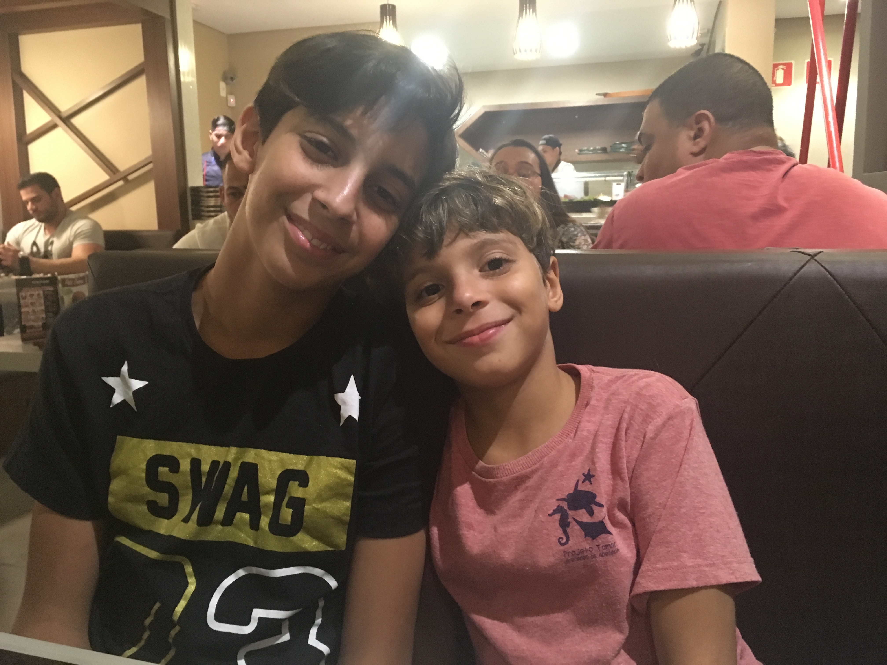

Quem somos
Me chamo Clarissa e sou mãe de dois meninos adolescentes de 13 e 17 anos. Esta página foi criada com o intuito de organizar as algumas tarefas e traçar metas e sonhos dos meninos para que possam sempre buscar ser melhores a cada dia e irem em direção à felicidade. Aqui haverá alguns hobbies deles e o que desejam para seus futuros. Eu, como mãe deles, farei o possível para que sejam realizados em bem-sucedidos.
Estes são os meninos adolescentes que movem meus dias =)
Nicholas à esquerda e Lucas à direita jantando no restaurante japonês.